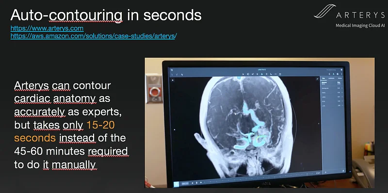

Talk: Improving healthcare with AI
Due to current events in Paris, the conference where I was supposed to deliver this talk has been postponed, and I decided to record it anyway.
This non-technical talk starts with a quick introduction to AI, and then presents different use cases of Deep Learning for healthcare applications. I hope you’ll like it!
